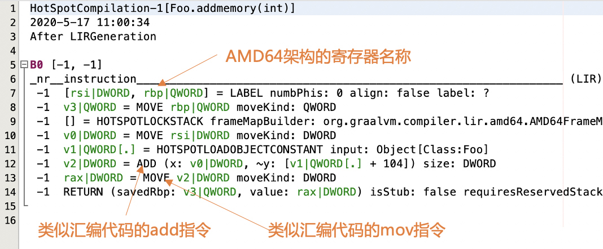
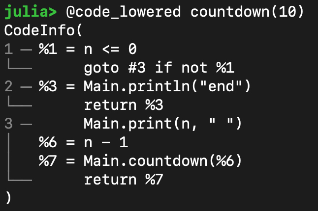
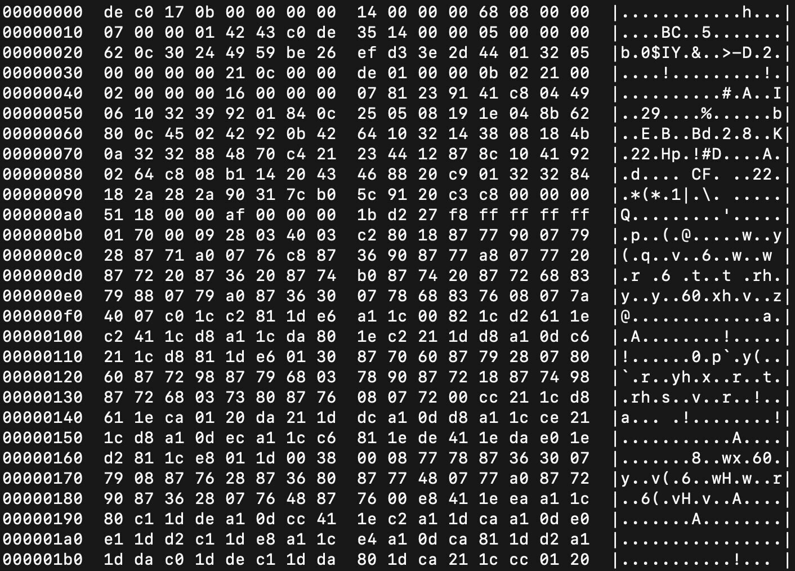
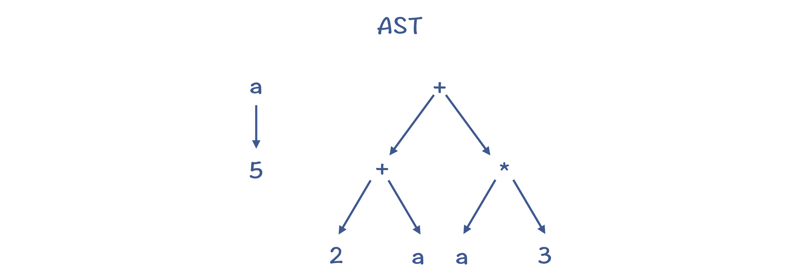
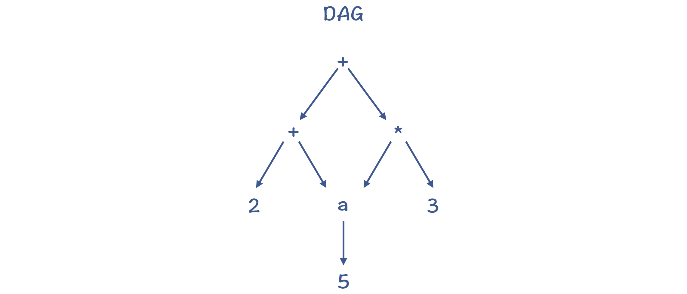
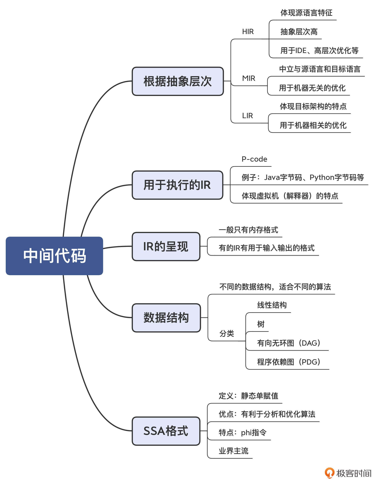

- 00 学习指南 如何学习这门编译原理实战课？.md.html
- 00 开篇词 在真实世界的编译器中游历.md.html
- 01 编译的全过程都悄悄做了哪些事情？.md.html
- 02 词法分析：用两种方式构造有限自动机.md.html
- 03 语法分析：两个基本功和两种算法思路.md.html
- 04 语义分析：让程序符合语义规则.md.html
- 05 运行时机制：程序如何运行，你有发言权.md.html
- 06 中间代码：不是只有一副面孔.md.html
- 07 代码优化：跟编译器做朋友，让你的代码飞起来.md.html
- 08 代码生成：如何实现机器相关的优化？.md.html
- 09 Java编译器（一）：手写的编译器有什么优势？.md.html
- 10 Java编译器（二）：语法分析之后，还要做些什么？.md.html
- 11 Java编译器（三）：属性分析和数据流分析.md.html
- 12 Java编译器（四）：去除语法糖和生成字节码.md.html
- 13 Java JIT编译器（一）：动手修改Graal编译器.md.html
- 14 Java JIT编译器（二）：Sea of Nodes为何如此强大？.md.html
- 15 Java JIT编译器（三）：探究内联和逃逸分析的算法原理.md.html
- 16 Java JIT编译器（四）：Graal的后端是如何工作的？.md.html
- 17 Python编译器（一）：如何用工具生成编译器？.md.html
- 18 Python编译器（二）：从AST到字节码.md.html
- 19 Python编译器（三）：运行时机制.md.html
- 20 JavaScript编译器（一）：V8的解析和编译过程.md.html
- 21 JavaScript编译器（二）：V8的解释器和优化编译器.md.html
- 22 Julia编译器（一）：如何让动态语言性能很高？.md.html
- 23 Julia编译器（二）：如何利用LLVM的优化和后端功能？.md.html
- 24 Go语言编译器：把它当作教科书吧.md.html
- 25 MySQL编译器（一）：解析一条SQL语句的执行过程.md.html
- 26 MySQL编译器（二）：编译技术如何帮你提升数据库性能？.md.html
- 27 课前导读：学习现代语言设计的正确姿势.md.html
- 28 前端总结：语言设计也有人机工程学.md.html
- 29 中端总结：不遗余力地进行代码优化.md.html
- 30 后端总结：充分发挥硬件的能力.md.html
- 31 运行时（一）：从0到语言级的虚拟化.md.html
- 32 运行时（二）：垃圾收集与语言的特性有关吗？.md.html
- 33 并发中的编译技术（一）：如何从语言层面支持线程？.md.html
- 34 并发中的编译技术（二）：如何从语言层面支持协程？.md.html
- 35 并发中的编译技术（三）：Erlang语言厉害在哪里？.md.html
- 36 高级特性（一）：揭秘元编程的实现机制.md.html
- 37 高级特性（二）：揭秘泛型编程的实现机制.md.html
- 38 综合实现（一）：如何实现面向对象编程？.md.html
- 39 综合实现（二）：如何实现函数式编程？.md.html
- 40 成果检验：方舟编译器的优势在哪里？.md.html
- 不定期加餐1 远程办公，需要你我具备什么样的素质？.md.html
- 不定期加餐2 学习技术的过程，其实是训练心理素质的过程.md.html
- 不定期加餐3 这几年，打动我的两本好书.md.html
- 不定期加餐4 从身边的牛人身上，我学到的一些优秀品质.md.html
- 不定期加餐5 借助实例，探究C++编译器的内部机制.md.html
- 划重点 7种编译器的核心概念与算法.md.html
- 期末答疑与总结 再次审视学习编译原理的作用.md.html
- 热点问题答疑 如何吃透7种真实的编译器？.md.html
- 用户故事 易昊：程序员不止有Bug和加班，还有诗和远方.md.html
- 知识地图 一起来复习编译技术核心概念与算法.md.html
- 结束语 实战是唯一标准！.md.html
- 捐赠
06 中间代码：不是只有一副面孔
你好，我是宫文学。今天这一讲，我来带你认识一下中间代码（IR）。
IR，也就是中间代码（Intermediate Representation，有时也称Intermediate Code，IC），它是编译器中很重要的一种数据结构。编译器在做完前端工作以后，首先就是生成IR，并在此基础上执行各种优化算法，最后再生成目标代码。
所以说，编译技术的IR非常重要，它是运行各种优化算法、代码生成算法的基础。不过，鉴于IR的设计一般与编译器密切相关，而一些教科书可能更侧重于讲理论，所以对IR的介绍就不那么具体。这就导致我们对IR有非常多的疑问，比如：
- IR都有哪些不同的设计，可以分成什么类型？
- IR有像高级语言和汇编代码那样的标准书写格式吗？
- IR可以采用什么数据结构来实现？
为了帮助你把对IR的认识从抽象变得具体，我今天就从全局的视角和你一起梳理下IR有关的认知。
首先，我们来了解一下IR的用途，并一起看看由于用途不同导致IR分成的多个层次。
IR的用途和层次
设计IR的目的，是要满足编译器中的各种需求。需求的不同，就会导致IR的设计不同。通常情况下，IR有两种用途，一种是用来做分析和变换的，一种是直接用于解释执行的。我们先来看第一种。
编译器中，基于IR的分析和处理工作，一开始可以基于一些抽象层次比较高的语义，这时所需要的IR更接近源代码。而在后面，则会使用低层次的、更加接近目标代码的语义。
基于这种从高到低的抽象层次，IR可以归结为HIR、MIR和LIR三类。
HIR：基于源语言做一些分析和变换
假设你要开发一款IDE，那最主要的功能包括：发现语法错误、分析符号之间的依赖关系（以便进行跳转、判断方法的重载等）、根据需要自动生成或修改一些代码（提供重构能力）。
这个时候，你对IR的需求，是能够准确表达源语言的语义就行了。这种类型的IR，可以叫做High IR，简称HIR。
其实，AST和符号表就可以满足这个需求。也就是说，AST也可以算作一种IR。如果你要开发IDE、代码翻译工具（从一门语言翻译到另一门语言）、代码生成工具、代码统计工具等，使用AST（加上符号表）就够了。
当然，有些HIR并不是树状结构（比如可以采用线性结构），但一般会保留诸如条件判断、循环、数组等抽象层次比较高的语法结构。
基于HIR，可以做一些高层次的代码优化，比如常数折叠、内联等。在Java和Go的编译器中，你可以看到不少基于AST做的优化工作。
MIR：独立于源语言和CPU架构做分析和优化
大量的优化算法是可以通用的，没有必要依赖源语言的语法和语义，也没有必要依赖具体的CPU架构。
这些优化包括部分算术优化、常量和变量传播、死代码删除等，我会在下一讲和你介绍。实现这类分析和优化功能的IR可以叫做Middle IR，简称MIR。
因为MIR跟源代码和目标代码都无关，所以在讲解优化算法时，通常是基于MIR，比如三地址代码（Three Address Code，TAC）。
TAC的特点是，最多有三个地址（也就是变量），其中赋值符号的左边是用来写入的，而右边最多可以有两个地址和一个操作符，用于读取数据并计算。
我们来看一个例子，示例函数foo：
int foo (int a){
int b = 0;
if (a > 10)
b = a;
else
b = 10;
return b;
}
对应的TAC可能是：
BB1:
b := 0
if a>10 goto BB3 //如果t是false(0),转到BB3
BB2:
b := 10
goto BB4
BB3:
b := a
BB4:
return b
可以看到，TAC用goto语句取代了if语句、循环语句这种比较高级的语句，当然也不会有类、继承这些高层的语言结构。但是，它又没有涉及数据如何在内存读写等细节，书写格式也不像汇编代码，与具体的目标代码也是独立的。
所以，它的抽象程度算是不高不低。
LIR：依赖于CPU架构做优化和代码生成
最后一类IR就是Low IR，简称LIR。
这类IR的特点，是它的指令通常可以与机器指令一一对应，比较容易翻译成机器指令（或汇编代码）。因为LIR体现了CPU架构的底层特征，因此可以做一些与具体CPU架构相关的优化。
比如，下面是Java的JIT编译器输出的LIR信息，里面的指令名称已经跟汇编代码很像了，并且会直接使用AMD64架构的寄存器名称。

图1：Java的JIT编译器的LIR
好了，以上就是根据不同的使用目的和抽象层次，所划分出来的不同IR的关键知识点了。
HIR、MIR和LIR这种划分方法，主要是参考“鲸书（Advanced Compiler Design and Implementation）”的提法。对此有兴趣的话，你可以参考一下这本书。
在实际操作时，有时候IR的划分标准不一定跟鲸书一致。在有的编译器里（比如Graal编译器），把相对高层次的IR叫做HIR，相对低层次的叫做LIR，而没有MIR。你只要知道它们代表了不同的抽象层次就足够了。
其实，在一个编译器里，有时候会使用抽象层次从高到低的多种IR，从便于“人”理解到便于“机器”理解。而编译过程可以理解为，抽象层次高的IR一直lower到抽象层次低的IR的过程，并且在每种IR上都会做一些适合这种IR的分析和处理工作，直到最后生成了优化的目标代码。
扩展：lower这个词的意思，就是把对计算机程序的表示，从抽象层次比较高的、便于人理解的格式，转化为抽象层次比较低的、便于机器理解的格式。
有些IR的设计，本身就混合了多个抽象层次的元素，比如Java的Graal编译器里就采用了这种设计。Graal的IR采用的是一种图结构，但随着优化阶段的进展，图中的一些节点会逐步从语义比较抽象的节点，lower到体现具体架构特征的节点。
P-code：用于解释执行的IR
好了，前3类IR是从抽象层次来划分的，它们都是用来做分析和变换的。我们继续看看第二种直接用于解释执行的IR。这类IR还有一个名称，叫做P-code，也就是Portable Code的意思。由于它与具体机器无关，因此可以很容易地运行在多种电脑上。这类IR对编译器来说，就是做编译的目标代码。
到这里，你一下子就会想到，Java的字节码就是这种IR。除此之外，Python、Erlang也有自己的字节码，.NET平台、Visual Basic程序也不例外。
其实，你也完全可以基于AST实现一个全功能的解释器，只不过性能会差一些。对于专门用来解释执行IR，通常会有一些特别的设计，跟虚拟机配合来尽量提升运行速度。
需要注意的是，P-code也可能被进一步编译，形成可以直接执行的机器码。Java的字节码就是这样的例子。因此，在这门课程里，我会带你探究Java的两个编译器，一个把源代码编译成字节码，一个把字节码编译成目标代码（支持JIT和AOT两种方式）。
好了，通过了解IR的不同用途，你应该会对IR的概念更清晰一些。用途不同，对IR的需求也就不同，IR的设计自然也就会不同。这跟软件设计是由需求决定的，是同一个道理。
接下来的一个问题是，IR是怎样书写的呢？
IR的呈现格式
虽然说是中间代码，但总得有一个书写格式吧，就像源代码和汇编代码那样。
其实IR通常是没有书写格式的。一方面，大多数的IR跟AST一样，只是编译过程中的一个数据结构而已，或者说只有内存格式。比如，LLVM的IR在内存里是一些对象和接口。
另一方面，为了调试的需要，你可以把IR以文本的方式输出，用于显示和分析。在这门课里，你也会看到很多IR的输出格式。比如，下面是Julia的IR：

图2：Julia语言输出的IR信息
在少量情况下，IR有比较严格的输出格式，不仅用于显示和分析，还可以作为结果保存，并可以重新读入编译器中。比如，LLVM的bitcode，可以保存成文本和二进制两种格式，这两种格式间还可以相互转换。
我们以C语言为例，来看下fun1函数，及其对应的LLVM IR的文本格式和二进制格式：
//fun1.c
int fun1(int a, int b){
int c = 10;
return a+b+c;
}
LLVM IR的文本格式（用“clang -emit-llvm -S fun1.c -o fun1.ll”命令生成，这里只节选了主要部分）：
; ModuleID = 'fun1.c'
source_filename = "function-call1.c"
target datalayout = "e-m:o-i64:64-f80:128-n8:16:32:64-S128"
target triple = "x86_64-apple-macosx10.14.0"
; Function Attrs: noinline nounwind optnone ssp uwtable
define i32 @fun1(i32, i32) #0 {
%3 = alloca i32, align 4
%4 = alloca i32, align 4
%5 = alloca i32, align 4
store i32 %0, i32* %3, align 4
store i32 %1, i32* %4, align 4
store i32 10, i32* %5, align 4
%6 = load i32, i32* %3, align 4
%7 = load i32, i32* %4, align 4
%8 = add nsw i32 %6, %7
%9 = load i32, i32* %5, align 4
%10 = add nsw i32 %8, %9
ret i32 %10
}
二进制格式（用“clang -emit-llvm -c fun1.c -o fun1.bc”命令生成，用“hexdump -C fun1.bc”命令显示）：

图3：LLVM IR的二进制格式
IR的数据结构
既然我们一直说IR会表现为内存中的数据结构，那它到底是什么结构呢？
在实际的实现中，有线性结构、树结构、有向无环图（DAG）、程序依赖图（PDG）等多种格式。编译器会根据需要，选择合适的数据结构。在运行某些算法的时候，采用某个数据结构可能会更顺畅，而采用另一些结构可能会带来内在的阻滞。所以，我们一定要根据具体要处理的工作的特点，来选择合适的数据结构。
那我们接下来，就具体看看每种格式的特点。
第一种：类似TAC的线性结构（Linear Form）
你可以把代码表示成一行行的指令或语句，用数组或者列表保存就行了。其中的符号，需要引用符号表，来提供类型等信息。
这种线性结构有时候也被称作goto格式。因为高级语言里的条件语句、循环语句，要变成用goto语句跳转的方式。
第二种：树结构
树结构当然可以用作IR，AST就是一种树结构。
很多资料中讲指令选择的时候，也会用到一种树状的结构，便于执行树覆盖算法。这个树结构，就属于一种LIR。
树结构的缺点是，可能有冗余的子树。比如，语句“a=5; b=(2+a)+a*3; ”形成的AST就有冗余。如果基于这个树结构生成代码，可能会做两次从内存中读取a的值的操作，并存到两个临时变量中。

图4：冗余的子树
第三种：有向无环图（Directed Acyclic Graph，DAG）
DAG结构，是在树结构的基础上，消除了冗余的子树。比如，上面的例子转化成DAG以后，对a的内存访问只做一次就行了。

图5：DAG结构消除了冗余的子树
在LLVM的目标代码生成环节，就使用了DAG来表示基本块内的代码。
第四种：程序依赖图（Program Dependence Graph，PDG）
程序依赖图，是显式地把程序中的数据依赖和控制依赖表示出来，形成一个图状的数据结构。基于这个数据结构，我们再做一些优化算法的时候，会更容易实现。
所以现在，有很多编译器在运行优化算法的时候，都基于类似PDG的数据结构，比如我在课程后面会分析的Java的JIT编译器和JavaScript的编译器。
这种数据结构里，因为会有很多图节点，又被形象地称为“节点之海（Sea of Nodes）”。你在很多文章中，都会看到这个词。
以上就是常用于IR的数据结构了。接下来，我再介绍一个重要的IR设计范式：SSA格式。
SSA格式的IR
SSA是Static Single Assignment的缩写，也就是静态单赋值。这是IR的一种设计范式，它要求一个变量只能被赋值一次。我们来看个例子。
“y = x1 + x2 + x3 + x4”的普通TAC如下：
y := x1 + x2;
y := y + x3;
y := y + x4;
其中，y被赋值了三次，如果我们写成SSA的形式，就只能写成下面的样子：
t1 := x1 + x2;
t2 := t1 + x3;
y := t2 + x4;
那我们为什么要费力写成这种形式呢，还要为此多添加t1和t2两个临时变量？
原因是，使用SSA的形式，体现了精确的“使用-定义（use-def）”关系。并且由于变量的值定义出来以后就不再变化，使得基于SSA更容易运行一些优化算法。在后面的课程中，我会通过实际的例子带你体会这一点。
在SSA格式的IR中，还会涉及一个你经常会碰到的，但有些特别的指令，叫做 phi指令。它是什么意思呢？我们看一个例子。
同样对于示例代码foo：
int foo (int a){
int b = 0;
if (a > 10)
b = a;
else
b = 10;
return b;
}
它对应的SSA格式的IR可以写成：
BB1:
b1 := 0
if a>10 goto BB3
BB2:
b2 := 10
goto BB4
BB3:
b3 := a
BB4:
b4 := phi(BB2, BB3, b2, b3)
return b4
其中，变量b有4个版本：b1是初始值，b2是else块（BB2）的取值，b3是if块（BB3）的取值，最后一个基本块（BB4）要把b的最后取值作为函数返回值。很明显，b的取值有可能是b2，也有可能是b3。这时候，就需要phi指令了。
phi指令，会根据控制流的实际情况确定b4的值。如果BB4的前序节点是BB2，那么b4的取值是b2；而如果BB4的前序节点是BB3，那么b4的取值就是b3。所以你会看到，如果要满足SSA的要求，也就是一个变量只能赋值一次，那么在遇到有程序分支的情况下，就必须引入phi指令。关于这一点，你也会在课程后面经常见到它。
最后我要指出的是，由于SSA格式的优点，现代语言用于优化的IR，很多都是基于SSA的了，包括我们本课程涉及的Java的JIT编译器、JavaScript的V8编译器、Go语言的gc编译器、Julia编译器，以及LLVM工具等。所以，你一定要高度重视SSA。
课程小结
今天这一讲，我希望你能记住关于IR的几个重要概念：
- 根据抽象层次和使用目的不同，可以设计不同的IR；
- IR可能采取多种数据结构，每种结构适合不同的处理工作；
- 由于SSA格式的优点，主流的编译器都在采用这种范式来设计IR。
通过学习IR，你会形成看待编译过程的一个新视角：整个编译过程，就是生成从高抽象度到低抽象度的一系列IR，以及发生在这些IR上的分析与处理过程。
我还展示了三地址代码、LLVM IR等一些具体的IR设计，希望能给你增加一些直观印象。在有的教科书里，还会有三元式、四元式、逆波兰格式等不同的设计，你也可以参考。而在后面的课程里，你会接触到每门编译器的IR，从而对IR的理解更加具体和丰满。
本讲的思维导图如下：

一课一思
你能试着把下面这段简单的程序，改写成TAC和SSA格式吗？
int bar(a){
int sum = 0;
for (int i = 0; i< a; i++){
sum = sum+i;
}
return sum;
}
欢迎在留言区分享你的见解，也欢迎你把今天的内容分享给更多的朋友。
参考资料
- 关于程序依赖图的论文参考：The Program Dependence Graph and its Use in Optimization。
- 更多的关于LLVM IR的介绍，你可以参考《编译原理之美》的第25、26讲，以及LLVM官方文档。
- 对Java字节码的介绍，你可以参考《编译原理之美》的第32讲，还可以参考Java Language Specification。
- 鲸书（Advanced Compiler Design and Implementation）第4章。
© 2019 - 2023 Liangliang Lee. Powered by gin and hexo-theme-book.